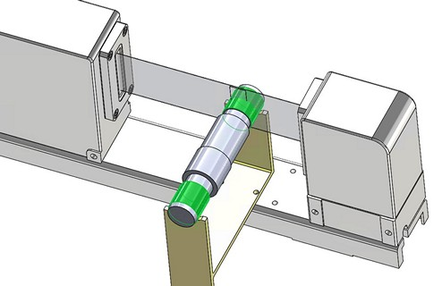
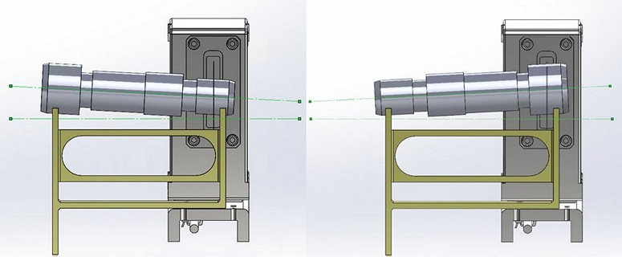
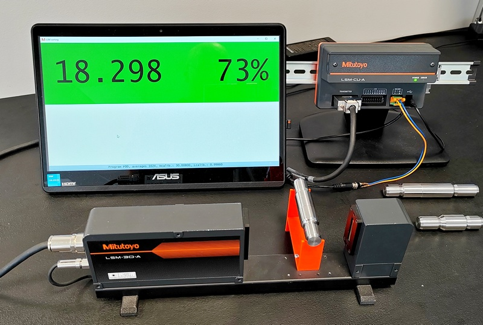

PRAXE: prototyp pro robotickou kontrolu dvou různých průměrů
Tato aplikace vznikla jako funkční prototyp na základě požadavku zákazníka na 100%.kontrolu hřídelových dílů z dlouhotočného automatu. Předmětem měření jsou dva rozdílné průměry na koncích s tolerančním rozsahem 27 (h8) a 18 (h7) µm.

V počáteční fázi má být pracoviště s manuální obsluhou, v další s robotickým zakládáním a zpracováním vyhovující / nevyhovující. Právě požadovaná přesnost a výhled robotického zakládání s potřebou volného prosoru při zakládání vedly k volbě použití LSM.
Díly nejsou před měřením jednotně orientovány a rozdíl průměrů na obou koncích je pouze cca 0,1 mm, takže systematické vkládání stylem "nejdřív menší, pak větší" by jen zvyšovalo pracnost a celkovou dobu měření. Nicméně relativně velký rozdíl měřených průměrů nabízí při následném zpracování (PC) automatickou detekci jmenovitého hodnoty a následné přiřazení správných tolerancí k ní.
Na základě toho vznikla základní mechanická sestava s jednoduchým prizmatem pro vkládání dílu. Jistou námitkou může být, že díky rozdílným průměrům není osa dílu kolmá k rovině laserového svazku. Tato námitka je samozřejmě správná.
Pro náš konkrétní díl je rozdíl poloměrů pouze 0,045 mm, což představuje při rozteči podpor 90 mm rozdíl pouze 1,7 úhlové minuty (=rozdíl 0,5 mm/metr). Což je absolutně zanedbatelná úchylka, která představuje chybu průměru pod 0,01 µm.
Zajímavé ale je, že tento způsob zakládání se jeví dobře využitelný i při významně větších rozdílech průměrů, jak je předvedeno na následujícím obrázku:

Protože důležité je, že úhel sklonu osy je u obou možností vložení stejný. Na základě geometrických poměrů je tak možné vypočítat a použit opravný koeficient, který je pro oba průměry stejný. Takže systém kontroly typu "je jedno, kterým koncem začínám", by byl i zde možný.
Skutečné provedení
Skutečné provedení se podobá předchozímu příkladu se tříděním trubiček. Významnější změna je pouze a aplikačním programu (zde opět v Pythonu), který zajišťuje potřebnou funkcionalitu a realizuje tak vlastní uživatelské rozhraní.

Procentuální hodnota vedle skutečné hodnoty znamená její polohu vzhledem k tolerančnímu poli:
- 0% = hodnota dolního tolerančního limitu (LTL)
- 100% = hodnota horního tolerančního limitu (UTL)
- 50% = uprostřed tolerančního pole - ideální stav
Díky tomu a díky podbarvení červená/zelená je možné snadno posoudit stav a tendenci pohybu výrobního procesu. Protože zelená je sice OK, ale pokud u toho bude třeba jen 5%, tak je to "jen tak tak".
Lepší představu o funkci získáte shlédnutím krátkého videa.
Další kroky
Jak bylo řešeno, tato aplikace je funkční prototyp. Ukazuje zákazníkovi (který si LSM k tomuto účelu zakoupil) reálnou funkcionalitu a nastiňuje směr, kterým se může dál rozvíjet. Zároveň je to ale i řešení reálně použitelné v praxi, které i při ručním zakládání málo kvalifikovanou obsluhou umožní provádět rutinní kontrolu s dodržením požadované přesností a s rychlostí kontroly pod 10 s/díl (takt).
Přidáním modulu digitálního IO rozhraní k vyhodnocovacímu PC, rozšířením programu a připojením navazujících zařízení pak lze docílit vyššího stupně automatizace (např. otáčení či posuv dílu při měření Průměr1 a Průměr2), případně možnosti realizovat celý proces plně roboticky. V takovém případě by možná bylo lepší přepsat stávající program do některého z jazyků pro .NET, hlavně kvůli sw knihovnám pro připojení externích IO.
Odkazy a další informace
Související článek: Nová řada bezkontaktních laserových mikrometrů a jejich použití.
Související článek: PRAXE: příklad realizace jednoduché aplikace s LSM u zákazníka